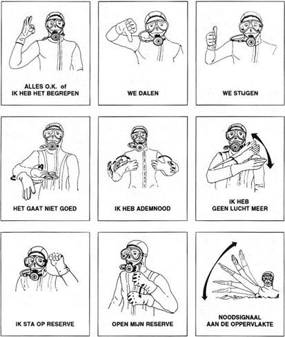

In ons brandweerkorps beschikken wij over een duikteam die bestaat uit 8 duikers waarvan er 4 duikers 3* nelos hebben en 4 duikers 2* nelos hebben, en een groep van een 20 droogduikers/bootbestuurders die onder de leiding staat van Lt. Dirk Daragas, bij een interventie waar de duikers worden ingezet worden onze duikers opgeroepen via hun zakontvanger en stuurd het systeem vanuit de kazerne een SMS bericht naar alle duikers uit het team, onmiddellijk zal ook de rest van het duikteam zoals de droogduikers/bootbestuurders worden opgeroepen. Bij aankomst van de eerste 2 duikers en 2 droogduikers vertrekt onmiddellijk de duikerswagen naar de interventie, alle leden van het duikteam vervoegen telkens bij aankomst de kleine garage waar ook het duikerslokaal zich bevind om dan de volgende voertuigen lichtevracht/minibus voor het duikteam klaar te maken en de aankomende duikers te helpen bij het inladen van hun persoonlijke spullen om snel te kunnen uitrukken.
De duiker zal vanop de oever of boot begeleid zijn door een droogduiker die via signalen via een touw de duiker in de juiste richting kan sturen om een object te zoeken, maar ook om de duiker te beveiligen om zo hem te waarschuwen bij aankomende scheepvaart en andere gevaren.
Een duiker gaat nooit te water zonder dat een veiligheidsduiker en droogduiker aanwezig is, want de droogduiker zal indien de duiker in nood raakt onmiddellijk optreden waarbij de andere duikteams die dan te water zijn onmiddellijk stoppen om eveneens de duiker in nood te helpen.
